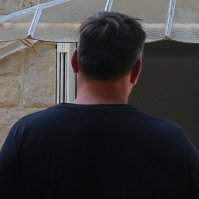

TIMES AND ROLL
- Time’s goin’ by
- Vinaigre
- Girl and boy
- I’ll be here
- It’s time for you
- One more year
- Virus
- Alien
- Bad joke
- Mystery girl
- A very good Mum
-
Alain HERNANDEZ
Paroles et musique, chant, choeurs, guitares acoustiques, clavier, programmation, percussions
-
Nicolas HUERRE
Guitares électriques lead et rythmiques, basse, guitares acoustiques, production, mixage, mastering -

Régis BOLIVARD
Batterie
-
Margot HUERRE
Violon sur "I’ll be here"
-
Enregistrement
Studio Secrétan, Studio La Fosse
Finalisation, arrangements, mixage : Studio La Fosse
Time's goin by
Little lovely girl little pretty girl
Little lovely girl oh little girl
One summer day When I try lok behind
You came to stay Times go by
You little girl into our world One more day
Your pretty face On my way
Your magic grace Wind had blown when I was young
Your secret smile I’m gettin ‘ old
Your magic eyes
Oh little blue eyed girl But I had to carry on
Oh go and change the world A little baby’s here to come
Maybe boy or maybe girl
So you’re grown He she will be part of my world
And you are gone Hey
You little girl
To face the world So you could smile
You find a chumb You could cry
So you’ll be Mum No matter tears no matter fears
Strong in this world I’ll be here
My little girl Girl or boy
Little lovely girl… You’ll give joy
I am wiatin’ for your comin’
Oh little blue eyed girl In the spring
Oh go and change the world
But I had…...
Little lovely girl little pretty girl
Little lovely girl
Girl and boy
She’s not the girl used to be glad
She’s the girl used to be sad
He’s not the boy who used to smile
He’s the boy who’s used tou cry, used to cry
He’s not the boy with the golden touch
He’s not the boy who speaks too much
She’s not the girl used to get fine
She’s the girl used to be so shy, to be shy
Little lonely boy, little lonely girl
Lookin’ for the love all around the world
Little lonely girl so sad on her own
Little lonely boy in an old cold empty home
He’s not the boy used to be leader
He’s the boy used to be looser
She’s not the girl used to brast about
She’s not the girl used to brag about, brag about
Little lonely girl, little lonely boy
All around the world waitin’ for some joy
Little lonely boy so sad on his own
Little lonely girl in a frozzen empty home…...
She’s not the girl used to be glad
She’s the girl used to be sad
He’s not the boy who used to smile
He’s the boy who’s used tou cry, used to cry
He’s not the boy with the golden touch
He’s not the boy who speaks too much
She’s not the girl used to get fine
She’s the girl used to be so shy, to be shy
Little lonely boy, little lonely girl
Lookin’ for the love all around the world
Little lonely girl so sad on her own
Little lonely boy in an old cold empty home
He’s not the boy used to be leader
He’s the boy used to be looser
She’s not the girl used to brast about
She’s not the girl used to brag about, brag about
Little lonely girl, little lonely boy
All around the world waitin’ for some joy
Little lonely boy so sad on his own
Little lonely girl in a frozzen empty home…...
Vinaigre
Sometimes I had enoughyou treat me like a child
Well you had to know you’re not always right
You’ve got to respect all the people you are with
Oh we could make it better we could break the freeze
Oh well it’s true that many times I’m doin’ mistakes
But it’s not e reason to get your eyes of snake
You’ve got to learn what runs in mind of man
The worst could get happen if we only just can blame
We can get it out, we can make it clearer
One thing we can do is to learn to hear
What makes you angry is not the same for everyone
What makes you glad can make so sad another one
I know sometimes it’s hard to understand the other
But we had to try and situation will be better
And now if we don’t move we ‘ll never get go farther
And I’m sure we’ll regert when we get much older
We’ve got to join our forces and try the best tha we can do
And everything will be allright oh yes for me and you
We had just to listen and understand the other
Open up our eyes make the life much better…..
I'll be here
I am laughin’
I am cryin’
I am waitin’
I feel lonely
I’m so hurry
I’m so worry
Sweet little baby
You don’t know me
Sleep little darlin’
Quiet in your sleep
I’ll be here
June is comin’
Baby’s smilin’
As I’m singin’
Wors of wisdom
Words of freedom
Be the welcome
You little baby
Soon you will come
My little baby
You’ll never be alone
I’ll be here
One more year
A year had pastIt’s still the samedi
We stay at home
Sad on our own
An year had past
We’re gettin’ mad
An year had come
We die alone
In hospital or at home
An year had past
We’re gettin’ mad
But all around the world
Every boy and every girl
They can’t have a kiss
They can’t get a bliss
Tell me what’s goin’ on here dow on earth
Tell me what’s goin’ on in this old wild world
Another year
We’re gettin’ feared
An year had past
We get afraid
An year had past
We’re gettin’ mad
An year had come
We’re all alone
All the people
Jailed at home
An year had past
We’re gettin’ mad
But all around the world…..
It's time for you
A brand new day
It’s time to wake up, get out of your bed, of your bed
Maybe your day
You’ve got to move on, get it in your head, in your head
Look at the skies
And you will forget of your cries
Look at the sun
And if you can you’ll get some fun
Look at the earth
It’s like an everlasting birth
A world of joy
If you want it little boy
It’s a world of joy
Another day
Hurry up oh boy please don’t be late, don’t be late
Well it’s your day
Don’t be afraid oh boy don’t wait again, wait again
Look at the moon
And you will get to walk on soon
Look at the seas
And you will feel a little breeze
Look at the earth
It’s like an everlasting birth
A world of joy
If you want it little boy
It’s a world of joy
Well it’s time for you to know something new
Well it’s time for you I guess it’s true….
Virus
Sun keeps to shine, up in the sky
The weather’s fine, world seems so quiet
Birds in the trees, sweet melodies
A lovely breeze’s here to appease
But in the city there’s nobody
Everyone is hided and so worry
A sudden panic wind had blown
Everyone is stuck at home all alone
Stuck at home
Stars keep to shine, up in the sky
The moon is right, world seems so quiet
And trough the night, a satellite
Up in the sky, all seems so quiet
But in town streets are empty
All the people get so worry
A ugly panic wind had blown
Everyone is stuck at home all alone
Stuck at home...
Alien
An alien came, keeps on crawlin’
All over the land, an alien ‘s flyin’
An alien’s there, keeps on soarin’
Here and everywhere, keepin’ snackin’
Late at night in your bed
Trough the night get afraid
In your room, in the gloom
You’re afraid
Late at night under sheet
Trough the night you get feared
In your rom, in the gloom
Everywher anywhere
An alien’s there
Alien came down, keeps on growin’
All over the ground, an alien’s spreadin’
Alien gets in, here and everywhere
Keepin’ on creepin’, an alien’s everywhere
Late at night in your bed
Trough the night get afraid
In your room, in the gloom
You’re afraid
Late at night under sheet
Trough the night you get feared
In your rom, in the gloom
Everywher anywhere
An alien’s there
Bad Joke
The trubbles begun as he started to run
In his a gun, he could say goodbye to fun
But everything was right
He didn’t want make her cry
She was the best in his life
Hello the very good time
She’s waitin’ for him at home drinkin’ her gin
When he’s gone she told ‘ Jim, you’re strong like you’ve never been ‘
He was so cool and so fine
He’ll come back late at night
He was dreamin’ of blue sky
It was the color of her eyes
Poor boy you’ve got to know
You’d better have to go
So get out of here
But you seem so merry
You find life so easy
So get out of here
Oh poor boy if you knew
You’d better find a clue
So get out of here
You’d better hurry up
Youd better move on up
So get out of here
He thought of his Mum
But it was time to come home
One thing he didn’t know
Her girlfriend was the law
The trubbles begun as he started to run
In his hand a gun, he could say goodbye to fun
Mystery girl
She was livin’ on the moutain top
She was known as the queen ofr the Bebop
She got two cats and a couple of dogs
She’s never drunk she never took drugs
Quietly livin’ in her home sweet home
She used to cook for a Daddy and Mum
Laid in grass lookin’ up to the sky
She seemed so lost in pretty smile
Oh mystery girl
Mystery girl
She used to walk on the moutain fields
Some people say she’s the fool on the hill
I don’t believe Iknow it’s not real
As Isaw her she gave me a thrill
Oh mystery girl
Mystery girl
Mystery girl let me live in your world
Mystery girl I will love you for the best and the worst…
A Very good mum
As the mornin’ comes she is out of bed
She’s about gettin’ dressed
Put her shoes on she’s runnin’ to the kitchen
Cookin’ breakfast for the children
Is the homework really done
She thinks about it as the radio’s on
Is the baby still asleep
Cause she don’t like to break his dream
She’s a very good Mum
She’s the best of million all around
She’s the sun
Mm mm mm
She’s a very very very good Mum
Oh yes she is
As coffee’s boilin’, she’s doin’ the cleanin’
And the children do their washin’
Around the table everyone has a smile
Give her a kiss and say goodbye
Will the scoolday be allright
She thinks about it and she’s not quiet
As she drags a comb across her head
She’s lookin’ up now she is late
She’s a very good Mum
She’s the best of million all around
She’s the sun
She’ll be there till the world go round
Mm mm mm
She’s a very very very good Mum
Oh yes she is….